Gerçekçi Tarım, Sınıflar ve RPG Deneyimi
NixaMC, özel fizik tabanlı ekin mekanikleri, 5 derin uzmanlık sınıfı, kademeli ekipman yükseltmeleri ve ValhallaMMO yetenek sistemiyle harmanlanmış adil bir Türkçe Minecraft topluluğudur.
Başlangıç Rehberi
Sunucuya katılmak için gereken istemci ayarları, kimlik doğrulama adımları ve teknik detaylar.
Bağlantı ve Sürüm Desteği
Sunucumuz Java Edition 1.16 ile 1.21.x arasındaki tüm istemci sürümleriyle tam uyumludur (ViaVersion / ViaBackwards köprüsü aktiftir).
Hesap Güvenliği (AuthMe)
Sunucumuz hem orijinal (Premium) hem de crack istemcileri destekler (online-mode=false). Sunucuya girdiğinizde şifrenizi belirleyin:
/register <şifre> <şifre>/login <şifre>
Zorunlu Kaynak Paketi
Özel ekinler, RPG silahları ve arayüz dokuları için sunucu kaynak paketi zorunludur. Sunucuya giriş yaparken çıkan istemi "Evet / Kabul Et" olarak onaylayın.
Sınıflar ve Karakter Uzmanlıkları
Oyun tarzınıza göre seçebileceğiniz 5 farklı uzmanlık sınıfı. Sınıfınızı /sinif komutu ile seçebilir, mevcut profilinize ve kalıcı bonuslarınıza /karakter menüsünden bakabilirsiniz.
Savaşçı
Ön CepheYüksek yakın dövüş savunması, kalkan bloklama direnci ve cephe savaşlarında üstün hayatta kalma kabiliyeti.
- Kalıcı yakın dövüş fiziksel hasar direnci (+%10).
- Kılıç savurma menzilinde ve kalkan dayanıklılığında artış.
- Zorlu çatışmalarda sersemletme direnci.
Okçu
Uzak MenzilUzaktan yüksek kritik hasar, hızlı yay germe temposu ve çatışma alanından çevikçe sıyrılma yeteneği.
- Yay germe hızında belirgin artış ve ok sapma oranında düşüş.
- Menzilli vuruşlarda kritik hasar çarpanı (+%15).
- Düşme hasarı indirimi ve hafif adımlar.
Büyücü
Büyü & DestekElementel güçler, iksir güçlendirmeleri ve alan etkili büyülerle savaşın seyrini değiştiren uzmanlık.
- Tüketilen iksir ve yemeklerin etki sürelerinde %25 uzama.
- Negatif durum etkilerine (zehir, zayıflık) karşı doğal bağışıklık direnci.
- Büyüsel saldırı ve savunma sinerjisi.
Suikastçı
Gölge & ÇeviklikYüksek hız, seri vuruş kombinasyonları ve arkadan yapılan ani saldırılarda yıkıcı hasar potansiyeli.
- Kalıcı hareket hızı artışı (+%12).
- Arkadan vuruşlarda ilave kritik darbe çarpanı.
- Saldırı savuşturma ve atılma kabiliyeti.
Madenci
Keşif & SanayiDerin maden keşifleri, hızlı cevher toplama, yeraltı dayanıklılığı ve alan kazı kabiliyeti ile sunucu ekonomisinin bel kemiği.
- Doğal Acele (Haste) etkisi ve taş blokları kırarken ekstra dayanıklılık.
- Cevher kazarken nadir maden bulma şansında artış.
- Karanlık madenlerde daha net görüş ve patlama direnci.
Farm Sistemi ve Ekin Mekaniği
NixaMC'de tarım yalnızca sağ tıklamaktan ibaret değildir; gerçekçi fizik kuralları, ışık ihtiyacı ve zanaat araçlarıyla derin bir ziraat ekonomisi sunar.
Gerçek Ekin Fiziği
Tohumlar çapalanmış nemli toprağa ekilir. Ekinin altındaki blok kırılırsa ekin bağı koparak düşer. Olgunlaşmadan kırılan ekinlerden ürün çıkmaz, yalnızca 1 adet tohum iade edilir.
Hasat ve Verim Döngüsü
Tam olgunlaşmış bir ekin kırıldığında veya tırpanla hasat edildiğinde 1 ila 3 ürün ve tarlayı yeniden ekmeniz için 1 ila 2 tohum elde edilir.
Çiftçi Tırpanı & Işık
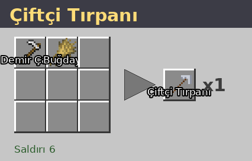
Çiftçi Tırpanı ile yapılan hasatlar hem daha hızlıdır hem de ek ekin düşme ihtimali sağlar. Ekinlerin büyümesi için en az 9 seviyesinde ışık ve nem gereklidir; kemik tozu tamamen çalışır.
Özel Ekin Türleri
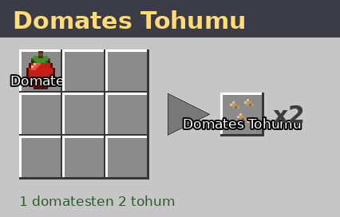
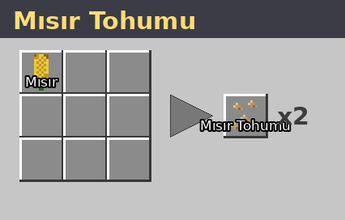
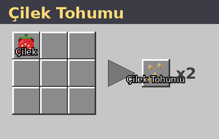
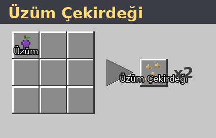
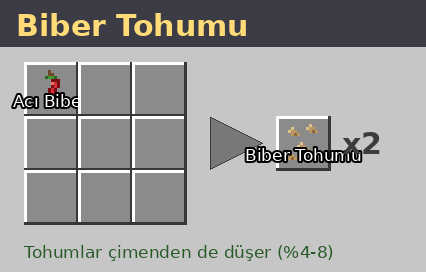
Yemekler ve Efektler
Hasat edilen ürünleri pişirerek hazırlayabileceğiniz özel yemekler ve karakterinize sağladıkları güçlü geçici etkiler.
| Yemek | Besin Değeri | Sağlanan Etkiler | Süre & Kademe | Kullanım Amacı |
|---|---|---|---|---|
| Domates Çorbası | 6 Doygunluk | Rejenerasyon (Yenilenme) + Doygunluk | 10 Saniye (Kademe I) | Savaş sonrası hızlı can toparlama |
| Pizza | 8 Doygunluk | Doygunluk + Acele / Kazı Hızı (Haste) | 30 Saniye (Kademe I) | Maden kazıları ve inşaat temposu |
| Elmalı Turta | 7 Doygunluk | Güçlü Rejenerasyon (Yenilenme II) | 15 Saniye (Kademe II) | Kritik boss ve zindan dövüşleri |
| Meyve Salatası | 5 Doygunluk | Hız (Speed) + Zıplama Artışı (Jump Boost) | 30 Saniye (Kademe I) | Arazi keşfi ve engebeli dağ tırmanışları |
| Izgara Mısır | 7 Doygunluk | Kazı Hızı II (Haste II) + Hız | 45 Saniye (Kademe II) / 20sn | Hızlı damar ve alan madenciliği |
| Biber Yahnisi | 7 Doygunluk | Ateş Direnci + Güç (Strength) | 60 Saniye (Ateş) / 20sn (Güç) | Nether keşifleri ve elit canavar baskınları |
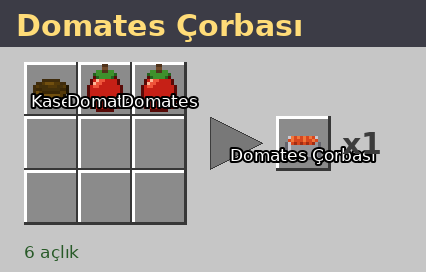
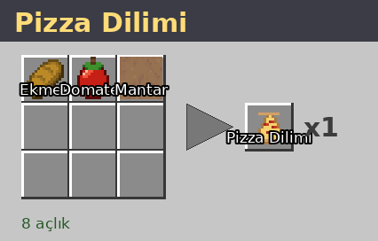
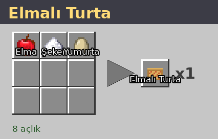
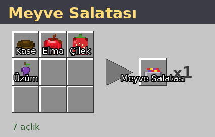
Ekipman ve İlerleme
Başlangıç bıçağından efsanevi Şafak Kılıcı'na uzanan silah yükseltme zinciri ve ValhallaMMO 4 parça tam set bonusları.
Kaşif Bıçağı
COMMON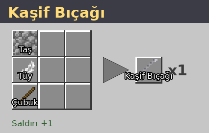
Hafif alaşımdan üretilmiş, seri saldırılara olanak sağlayan temel keşif silahı.
Gezgin Kılıcı
RAREDengeli ağırlık ve keskinlik sunan, uzun keşif rotaları için tasarlanmış sağlam kılıç.
Şafak Kılıcı
EPIC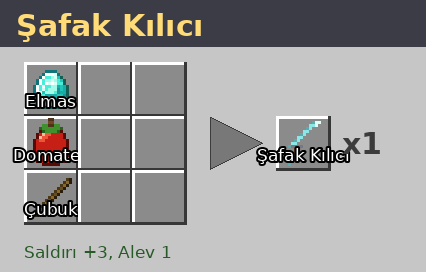
Şafak Çekirdeği ile güçlendirilmiş, düşmanları alevler içinde bırakan parlak efsanevi kılıç.
ValhallaMMO Zırh Setleri & 4 Parça Bonusları
Çiftçi Seti
Miğfer, Göğüslük, Tozluk ve Bot kombinasyonu. Tarım ve toplayıcılık yapanlar için üretilmiştir.
Kaşif Seti
Hafif zincir zırh halkaları. Uzun mesafe koşan ve çevik savaşan maceraperestler içindir.
Şafak Seti
Ağır ve büyülü elmas alaşım. Ön cephe savaşçıları ve zindan fatihleri için üst düzey koruma.
Demirci ve Yükseltme Fiyatları
/demirci komutunu kullanarak erişebileceğiniz atölyede silahlarınızı geliştirebilir, nadir set zırhlarını ve hazır yemekleri temin edebilirsiniz.
| İşlem / Eşya | Gerekli Materyaller | Hizmet Bedeli | Açıklama |
|---|---|---|---|
| Şafak Kılıcı Yükseltmesi | Gezgin Kılıcı + 1x Şafak Çekirdeği | 2.500₺ | Gezgin Kılıcını EPIC Şafak Kılıcı'na dönüştürür. |
| Şafak Çekirdeği | Doğrudan Satın Alım | 5.000₺ | Seviye 20+ canavar avlamadan çekirdeğe erişim sağlar. |
| Çiftçi Zırhı Parçası | Parça Başına (Miğfer / Göğüslük / Tozluk / Bot) | 500₺ | Şans ve Farm XP artıran zırh parçası. |
| Kaşif Zırhı Parçası | Parça Başına (Miğfer / Göğüslük / Tozluk / Bot) | 800₺ | Hareket hızı ve çeviklik sağlayan keşif zırhı parçası. |
| Şafak Zırhı Parçası | Parça Başına (Miğfer / Göğüslük / Tozluk / Bot) | 1.500₺ | Fiziksel güç ve ateş direnci sunan elit zırh parçası. |
| Hazır Pişmiş Yemekler | Porsiyon Başına (Çorba, Pizza, Salata, Mısır) | 100₺ – 150₺ | Tarlayla uğraşmak istemeyenler için hızlı iksir etkili gıdalar. |
ValhallaMMO RPG Sistemi
Yaptığınız her zanaat, madencilik eylemi ve savaş hareketi ValhallaMMO altyapısıyla karakterinize deneyim puanı kazandırır.
Alet Kademesi Deneyim Çarpanı
Kullandığınız aletin kalitesi, kırdığınız bloklardan ve kestiğiniz odunlardan kazanacağınız ValhallaMMO XP miktarını doğrudan belirler:
Netherite aletlerle çalışmak, temel taş aletlere kıyasla yeteneklerinizi kat kat daha süratli geliştirir.
Canlı Skor ve TAB Göstergesi
Kazanılan yetenek puanları (Skill Points) ve uzmanlık seviyeniz sürekli olarak sunucu TAB oyuncu listesinin alt kısmında (footer) güncel olarak gösterilir.
Komutlar ve Kullanım Rehberi
Oyuncuların günlük oynanışta ihtiyaç duyacağı tüm temel komutlar ve kısayollar.
| Komut | Kullanım Amacı | Kategori | Açıklama / Sınır |
|---|---|---|---|
/sinif |
Sınıf Seçim Menüsü | Karakter | 5 uzmanlık sınıfından birini seçer (24 saatte bir). |
/karakter |
Karakter ve İstatistik Paneli | Karakter | Aktif pasifleri, statları ve sınıf ayrıntılarını açar. |
/tpa <oyuncu> |
Işınlanma İsteği | Sosyal | Belirtilen oyuncunun yanına ışınlanma talebi yollar. |
/tpaccept |
Işınlanmayı Onayla | Sosyal | Gelen son ışınlanma talebini kabul eder. |
/home [isim] |
Eve Işınlanma | Seyahat | Kayıtlı ev noktasına döner (Maksimum 3 ev hakkı). |
/sethome [isim] |
Ev Noktası Kaydet | Seyahat | Bulunulan konumu ev olarak belirler (Maksimum 3 ev). |
/spawn |
Başlangıç Merkezine Dönüş | Seyahat | Sunucu spawn ve ana pazar alanına ışınlar. |
/skin <isim> |
Karakter Görünümü Değiştir | Kozmetik | Karakter görünümünüzü istenen kostüme uyarlar. |
/sit |
Oturma Pozisyonu | Animasyon | Herhangi bir blok, basamak veya sandalyeye oturur. |
/lay |
Uzanma Pozisyonu | Animasyon | Yere uzanma animasyonu başlatır. |
/crawl |
Sürünme Modu | Hareket | 1 blokluk dar tünellerde sürünerek geçmenizi sağlar. |
/vein |
Damar Madenciliği Modu | Maden | Eğilerek (sneak-break) aynı türdeki cevher damarlarını tekte kırar. |
/demirci |
Demirci Dükkanı Menüsü | Ekonomi | Silah yükseltme ve zırh satın alım arayüzünü açar. |
/shop |
Oyuncu Pazarı (QuickShop) | Ekonomi | Sandık dükkanları kurma ve pazar alanı arayüzü. |
Kurallar ve Koruma Sistemleri
NixaMC sunucusunda adil rekabet, dostane ortam ve kesintisiz güvenlik için uygulanan değişmez kurallar.
Arazi Güvenliği (GriefPrevention)
Grief, izinsiz yapı tahribatı ve hırsızlık kesinlikle yasaktır. Altın Kürek kullanarak arazinizi claimleyebilir; sandıklarınızı, hayvanlarınızı ve ekinlerinizi tamamen koruma altına alabilirsiniz.
Hile ve Küfür Koruması (GrimAC)
X-Ray, Fly, KillAura, Baritone veya haksız avantaj sağlayan istemciler anında tespit edilir. Sunucumuz paket tabanlı GrimAC motoru ile korunmaktadır. Sohbet alanında küfür ve hakaret yasaktır.
Bölge Kısıtlaması (GeoRestrict)
Yurt dışı kaynaklı bot saldırılarını ve VPN suistimallerini engellemek için sunucuya yalnızca Türkiye (TR) ve Azerbaycan (AZ) IP adreslerinden bağlantı kabul edilmektedir.
Mezar Taşı Sistemi (AxGraves)
Öldüğünüzde eşyalarınız yere saçılıp kaybolmaz. Ölüm noktanızda kilitli bir mezar taşı oluşur. Eşyalarınız 5 dakika boyunca mezarda korunur; mezara sağ tıklayarak tüm envanterinizi geri alabilirsiniz.
Sıkça Sorulan Sorular
Yeni başlayan oyuncuların en çok karşılaştığı durumlar ve pratik çözümler.
Dokular mor-siyah görünüyor, ne yapmalıyım?
Kaynak paketini indirirken bağlantı kopmuş olabilir. Çok oyunculu sunucu listenizde NixaMC'yi seçin, "Düzenle" butonuna basın ve "Sunucu Kaynak Paketleri: Açık (Enabled)" seçeneğini işaretleyip tekrar bağlanın.
Sınıfımı ne zaman değiştirebilirim?
Sınıf seçtikten sonra suistimalleri önlemek için 24 saatlik bekleme süresi devreye girer. Süre dolduktan sonra /sinif yazarak istediğiniz başka bir uzmanlığa geçiş yapabilirsiniz.
Sunucuda para nasıl kazanılır?
Hasat ettiğiniz domates, mısır, biber ve meyveleri işleyip yemek yaparak oyunculara satabilir (/shop) veya madencilikten çıkardığınız değerli cevherleri pazarda değerlendirebilirsiniz.
Mezarımı bulamazsam eşyalarım kaybolur mu?
Öldüğünüzde sohbette ölüm koordinatlarınız belirir. 5 dakika içinde mezarınıza ulaşıp sağ tıkladığınızda tüm eşyalarınızı eksiksiz geri alırsınız. 5 dakika aşılırsa mezar açılarak eşyalar serbest kalır.